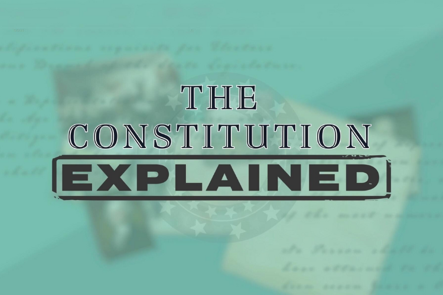
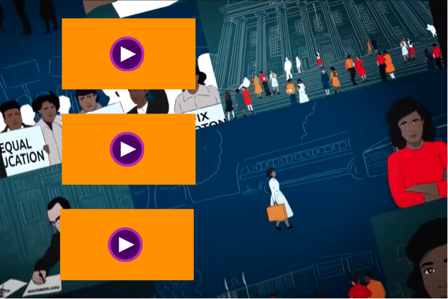
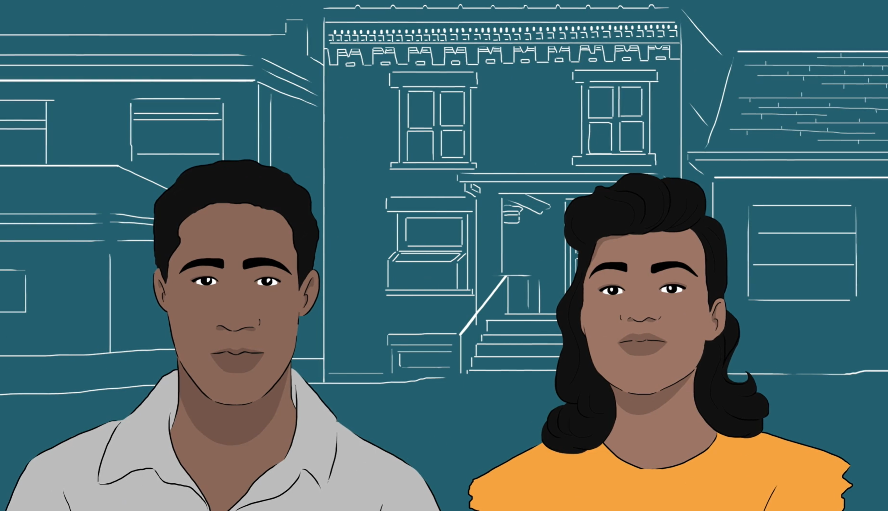
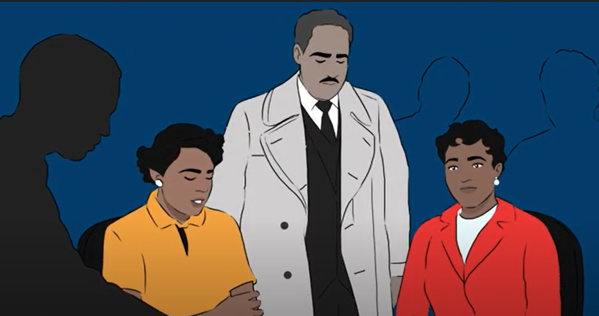

Videos

A Constitution Comes to Life
Grades: 6–8, 9–12
Explore foundational constitutional principles, the 1787 convention, and the race to ratify.
Watch Playlist
El surgimiento de la Constitución
Grades: 6–8, 9–12
Explora los principios constitucionales fundamentales y la Convención de 1787 en la que todo comenzó.
Ver Playlist
The Three Branches
Grades: 6–8, 9–12
Learn how power is divided among legislative, executive, and judicial branches in 6 videos.
Watch Playlist
Los tres poderes
Grades: 6–8, 9–12
Descubre cómo se divide el poder del Gobierno de EE. UU. en Legislativo, Ejecutivo y Judicial.
Ver Playlist
Articles of the Constitution
Grades: 6–8, 9–12
Breaks down the Constitution Article by Article to help students understand its contents.
Watch Playlist
Los artículos de la Constitución
Grades: 6–8, 9–12
Analiza la Constitución artículo por artículo para ayudar a los estudiantes a comprenderla.
Ver Playlist
Bill of Rights
Grades: 6–8, 9–12
Explore the key freedoms and protections outlined in the first ten amendments.
Watch Playlist
La Declaración de Derechos
Grades: 6–8, 9–12
Explora las libertades y protecciones de las primeras diez enmiendas.
Ver Playlist
Freedoms of the First Amendment
Grades: 6–8, 9–12
Dig deep into the First Amendment and its multiple freedoms.
Watch Playlist
Las libertades de la Primera Enmienda
Grades: 6–8, 9–12
Explora las libertades incluidas en la Primera Enmienda.
Ver Playlist
Expanding Rights
Grades: 6–8, 9–12
Learn how amendments expanded rights for excluded groups throughout history.
Watch Playlist
Derechos en expansión
Grades: 6–8, 9–12
Explora cómo las enmiendas expandieron derechos a grupos previamente excluidos.
Ver Playlist
Reconstruction Era Amendments
Grades: 6–8, 9–12
Discover how the Constitution changed following the Civil War.
Watch Playlist
Enmiendas de la Reconstrucción
Grades: 6–8, 9–12
Explica cómo la Constitución cambió tras la Guerra Civil e introduce las enmiendas de la era de Reconstrucción.
Ver Playlist
Your Voice, Your Vote
Grades: 6–8, 9–12
Explore amendments that expanded voting rights for men, women, young people, and D.C. residents.
Watch Playlist
Tu voz, tu voto
Grades: 6–8, 9–12
Explora las enmiendas que expandieron el derecho al voto para distintos grupos.
Ver Playlist
Progressive Era Amendments
Grades: 6–8, 9–12
Discover constitutional changes from the Progressive Era that reshaped American life.
Watch Playlist
Enmiendas de la era progresista
Grades: 6–8, 9–12
Explora los cambios constitucionales de la era progresista que transformaron la vida en EE. UU.
Ver Playlist
Other Amendments
Grades: 6–8, 9–12
Explore diverse amendments covering income tax, presidential terms, and more.
Watch Playlist
Otras enmiendas
Grades: 6–8, 9–12
Explora una selección diversa de enmiendas constitucionales.
Ver Playlist
The Constitution EXPLAINED: Video Series
Grades: 6–8, 9–12
A comprehensive series of 35 short videos explaining the text, history, and relevance of the Constitution.
Watch PlaylistTodo sobre la Constitución: serie de videos
Grades: 6–8, 9–12
Una serie completa de 35 videos cortos que explican el texto, la historia y la relevancia de la Constitución.
Ver PlaylistCivic Digital Literacy
Grades: 6–8, 9–12
Unlock the power of digital literacy with short videos that spark deeper learning and conversation.
Watch PlaylistChangemakers: Women in History
Grades: 6–8, 9–12
Meet extraordinary women who broke barriers and helped change the nation.
Watch Playlist
Changemakers: Key Players in the Civil Rights Movement
Grades: 6–8, 9–12
Discover the civil rights activists whose actions changed the nation.
Watch Playlist
Changemakers Video Series
Grades: 6–8, 9–12
Meet ordinary people who made extraordinary contributions to our nation.
Watch Playlist
Trending Now